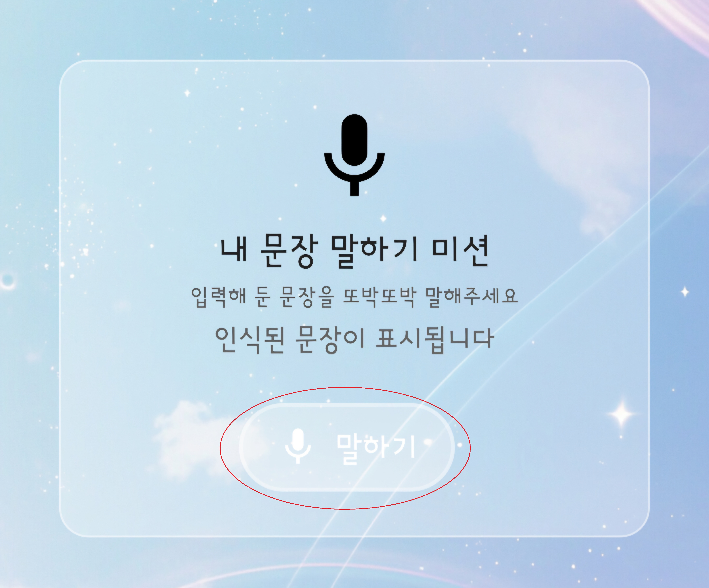
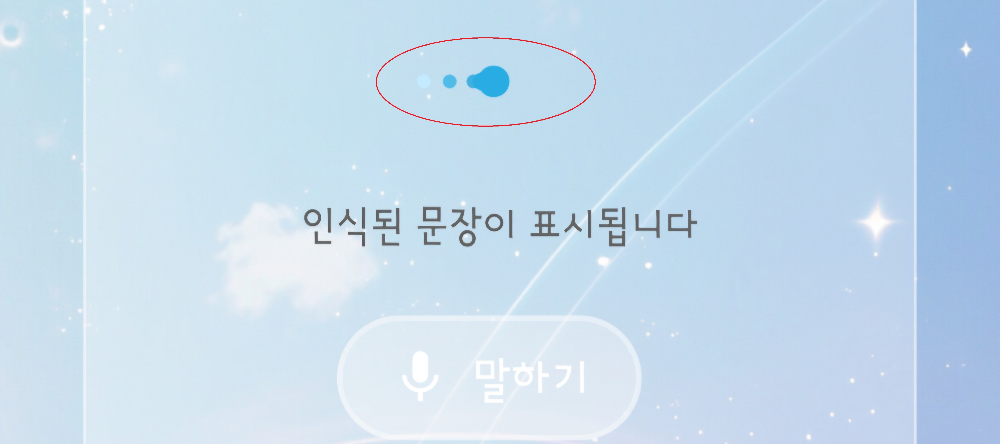
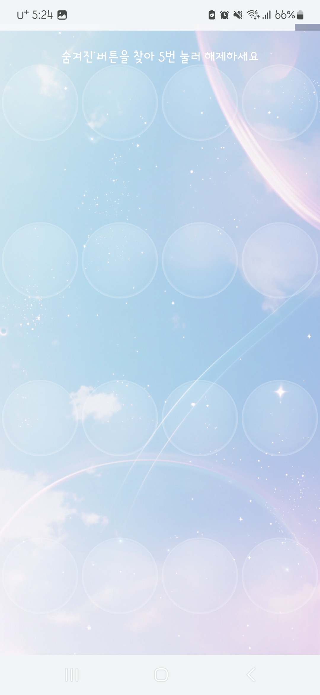
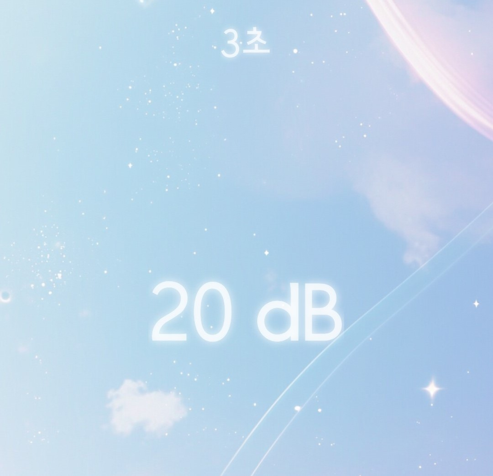
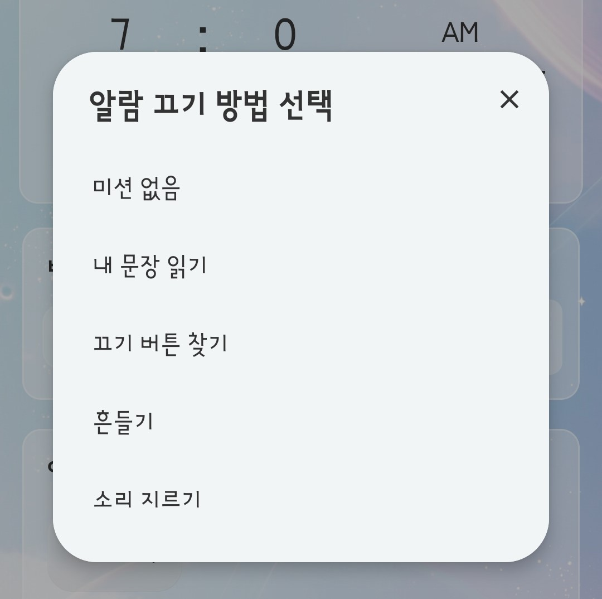

알람 미션
미션 알람은 지정된 조건을 완료해야 종료할 수 있습니다. 조금 더 확실하게 잠에서 깰 수 있도록 도와주는 기능입니다.
미션 알람 끄기 방법
미션 알람은 설정된 미션을 제한 시간 안에 완료한 뒤 종료할 수 있습니다.
제한 시간은 앱의 환경설정 화면에서 설정할 수 있습니다.
미션 종류
내 문장 읽기 ▼
사용자가 설정한 문장을 직접 읽어야 알람을 종료할 수 있습니다.

말하기 버튼을 눌러 음성 인식을 시작할 수 있습니다.

아이콘이 움직이는 동안 음성이 인식됩니다.
끄기 버튼 찾기 ▼
화면에서 여러 개의 버튼 중 끄기 버튼을 찾아야 알람을 종료할 수 있습니다.
- 난이도 하 / 중 : 버튼을 3번씩 누르세요.
- 난이도 상 : 버튼을 5번씩 누르세요.

여러 버튼 중 끄기 버튼을 찾아 눌러야 합니다.
흔들기 ▼
화면에 표시되는 설정한 횟수만큼 휴대폰을 흔들어야 알람을 종료할 수 있습니다.
흔들기 미션의 강도는 앱의 환경설정 화면에서 설정할 수 있습니다.
소리 지르기 ▼
설정한 시간 동안 화면에 실시간으로 표시되는 dB 값이 70dB 이상 유지되어야 알람을 종료할 수 있습니다.
현재 소리 크기는 화면에 계속 표시되며, 기준 이하로 내려가면 다시 70dB 이상 유지해야 합니다.
가장 강하게 잠을 깨우는 데 도움이 되는 미션입니다.

화면에 표시되는 dB 값을 보며 기준 이상으로 유지해야 합니다.

미션 종류 예시
미션을 사용하지 않을 때
미션을 사용하지 않으려면 '미션 없음'을 선택하면 됩니다.
참고해주세요
미션을 완료하지 않은 상태에서 화면을 벗어나면, 제한 시간이 끝날 때마다 알람이 다시 울리게 됩니다.
미션을 완료하기 어려운 상황이라면 휴대폰을 껐다가 다시 켜서 알람을 정리할 수 있습니다.